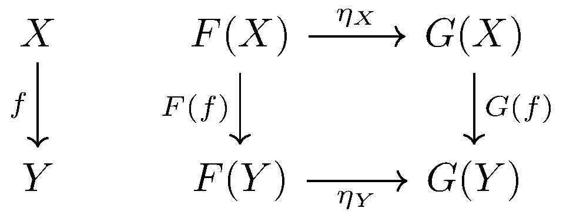

February 1st
$\renewcommand{\AA}{\mathbb A} \newcommand{\RR}{\mathbb R} \newcommand{\ZZ}{\mathbb Z} \newcommand{\NN}{\mathbb N} \newcommand{\QQ}{\mathbb Q} \newcommand{\CC}{\mathbb C} \newcommand{\FF}{\mathbb F} \newcommand{\PP}{\mathbb P} \newcommand{\e}{\varepsilon} \newcommand{\ball}[2]{(#1-#2,\,#1+#2)} \newcommand{\floor}[1]{\left\lfloor{#1}\right\rfloor} \newcommand{\ceil}[1]{\left\lceil{#1}\right\rceil} \newcommand{\norm}[1]{\left\lVert{#1}\right\rVert} \newcommand{\diff}{\operatorname{diff }} \newcommand{\disc}{\operatorname{disc }} \newcommand{\ord}{\text{ord}} \newcommand{\lcm}{\text{lcm}} \newcommand{\del}{\partial} \newcommand{\emp}{\varnothing} \newcommand{\divides}{\,|\,} \newcommand{\op}[1]{\operatorname{#1}} \newcommand{\mf}[1]{\mathfrak{#1}} \newcommand{\mc}[1]{\mathcal{#1}} \newcommand{\sgn}{\operatorname{sgn}} \newcommand{\refl}{\op{refl}} \newcommand{\UU}{\mathcal{U}} $Today I learned the definition of a natural transformation. These, are more or less, maps—or homotopies—between functors. Actually, because I know some homotopy type theory, I'll present these as homotopies. Fix categories $\mathcal C$ and $\mathcal D$ with two functors $F,G:\mathcal C\to\mathcal D.$ Formally, a natural transformation $\eta$ is, type-theoretically, the data\[\eta_\bullet:\prod_{X:\mathcal C}F(X)\to G(X)\]which commutes with $F$ and $G$ nicely. In other words, $\eta$ is made up morphisms $\eta_X:F(x)\to G(X),$ and we require the following diagram to commute.
As an example, in the category of vector spaces over $k,$ we have a natural transformation from $\op{id}$ to the endofunctor $V\mapsto V^{\vee\vee}$ the double-dual of $V.$ Proving this is not terribly enlightening: the required $\eta_V$ takes $v\in V$ to $(T:V\to k)\mapsto Tv\in V^{\vee\vee},$ and this works. In fact, if we restrict our view to finite-dimensional vector spaces, this natural transformation is made up of isomorphisms, and we call $\eta$ a natural isomorphism.
Let's make the analogy to homotopy type theory explicit. Viewing a morphism between objects in a type $A:\UU$ as a "path'' between them, functions between types become functors for free. To be explicit, this amounts to the statement\[\prod_{(x,y:A)}(x=_Ay)\to(f(x)=_Bf(y)),\]where $f:A\to B.$ Now our natural transformation $\eta$ goes between two functor/functions $f,g:A\to B,$ in our analogy that $\to$ is $=$ for objects, we see\[\eta_\bullet:\prod_{x:A}f(x)=_Bg(x)\]in terms of homotopy type theory. That is, $\eta$ is just a witness for the $f\sim g,$ so natural transformations are really just homotopies in this analogy.